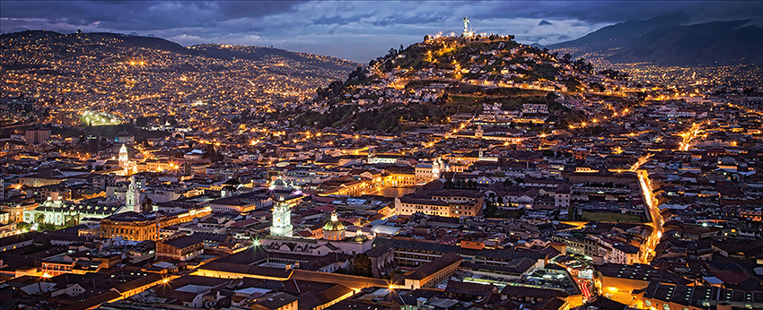

Un patrimonio storico millenarioQuito, la capitale dell'Ecuador, sorge a 2.850 metri di altitudine sotto il vulcano Pichincha. Prima della fondazione spagnola nel 1534 da parte di Sebastián de Belalcázar, l'area era un nodo commerciale del popolo Quitu e poi una capitale dell'Impero Inca. Durante la conquista, il generale inca Rumiñahui la bruciò completamente pur di non cederla agli europei. Nota come "Luce d'America", la città guidò i primi moti d'indipendenza contro la Spagna nel 1809. Questo immenso valore storico l'ha resa, nel 1978, la prima città al mondo dichiarata Patrimonio dell'Umanità dall'UNESCO.Il sincretismo culturale e l'arteLa cultura di Quito è una fusione indissolubile tra le radici indigene Kichwa e il cattolicesimo coloniale. Questa unione ha dato vita alla Scuola Quiteña, un movimento artistico che ha unito il barocco europeo ai simboli andini, visibile negli interni d'oro zecchino della Chiesa della Compagnia di Gesù. L'arte moderna è invece rappresentata da Oswaldo Guayasamín e dalla sua Capilla del Hombre, un complesso museale dedicato alla resilienza e alle sofferenze dei popoli dell'America Latina.Le tre anime della cittàGeograficamente allungata in una stretta vallata, Quito si divide in tre grandi aree di interesse:Il Centro Storico: il nucleo coloniale meglio conservato dell'America Latina, ricco di vie acciottolate, piazze importanti come la Plaza Grande e imponenti strutture come la Basilica del Voto Nacional.La Città Moderna: il cuore finanziario e commerciale a nord, dove il quartiere di La Mariscal concentra la vita notturna, gli hotel e la ristorazione.I punti panoramici e l'Equatore: la collina di El Panecillo con la sua Vergine alata e il TelefériQo (che sale a 4.000 metri) offrono viste mozzafiato. A pochi chilometri si trova infine la Mitad del Mundo, il celebre monumento posizionato sulla linea equatoriale.